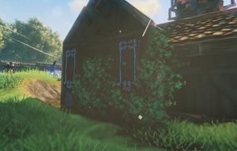

常春藤
本站支持中英文站内搜索。带 ↗ 的链接指向外部网站；各页来源版本见页脚。


常春藤是沼泽女巫更新加入的植物，可使用常春藤种子和耕地耙种植。它仅用于装饰，种下后会攀爬建筑，适合点缀房屋。与灰烬藤蔓不同，它不会结出酒莓束或其他可采集物品。
每株常春藤需要一份常春藤种子。幼苗ID为VineGreen_sapling，长成的植株ID为VineGreen。
常春藤蔓延到表面后，就不再需要连接耕地。玩家可借助临时支撑表面，让它蔓延到二楼墙面。后续生长不需要与地面连接。
生长
幼苗必须种在耕地上，满足以下所有条件时，会在200至300秒后长成常春藤：
- 位于青青草原、黑暗林山、泥泞沼泽、北境平原、迷雾之地或无尽之海。无法在灰烬之地生长。凛冽雪山和极北之地过于寒冷，除非处于护盾发生器的护盾内。
- 上方没有屋顶或其他物体。
- 0.5米内没有实体物体，包括将要攀附的墙壁和其他健康植物；1.8米内没有常春藤或其他藤蔓。
- 1.8米内有可供攀附的建筑构件。
长成的常春藤会附着最近的构件，向两侧和上方蔓延，不会向下。每段藤蔓背后都需要实体表面，表面被移除就会断裂。每段有30点生命值。
图片库


Ivy is a plant added in the Bog Witch update that can be planted with the Ivy Seeds using the Cultivator. Its only purpose is decorative; it can climb structures when planted, which makes it useful for decorating buildings. Unlike Ashvine, it never grows Vineberry Clusters or any other harvestable item.
Each Ivy costs one Ivy Seeds to plant. The planted sapling (ID VineGreen_sapling) grows into the full plant (ID VineGreen).
After the ivy has spread to a surface, no connection to cultivated soil is necessary. This means the player can use a temporary support surface to spread ivy to second story walls. Ivy does not require any connection to the ground to continue to grow.
Growing
The sapling must be planted on cultivated ground. It grows into ivy after 200 to 300 seconds, as long as all of the following are true:
- It is in the Meadows, Black Forest, Swamp, Plains, Mistlands or Ocean. It cannot grow in the Ashlands. In the Mountain and Deep North it is too cold, unless it is inside the shield of a Shield Generator.
- There is no roof or other object above it.
- Nothing solid, including the wall it will climb and other healthy plants, is within 0.5 meters of it, and no ivy or other vine is within 1.8 meters.
- A building piece is within 1.8 meters for it to cling to.
The grown ivy attaches to the nearest building piece and spreads sideways and upward across it, but never downward. Each ivy segment needs a solid surface behind it and breaks if that surface is removed. Each segment has 30 health.